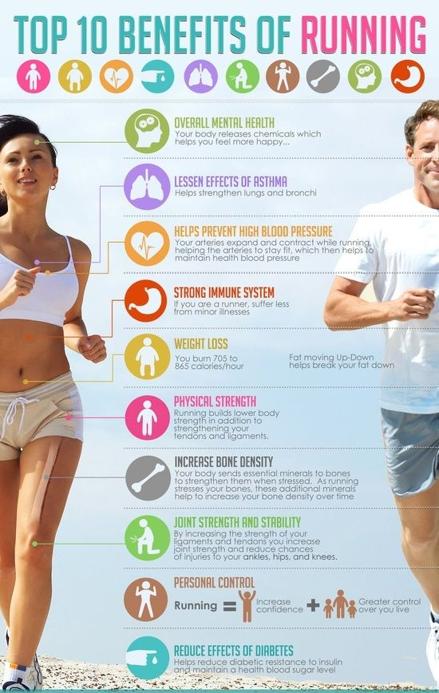

1.Spaľovanie tukov: Beh patrí k aeróbnym cvičením, čo sú pohybové aktivity vykonávané strednou intenzitou po dlhší čas, so zvýšenou tepovou frekvenciou. Aeróbne cvičenie slúži na spaľovanie tukov a tým aj k chudnutiu.
2.Kardiovaskulárne cvičenie: Pri behu dochádza tiež k stimulácii kardiovaskulárneho systému, čo má blahodarný vplyv na funkciu srdca a ciev. Vďaka tomu beh prispieva k znižovaniu krvného tlaku a tým k prevencii mozgových príhod a infarktov.
3.Posilnenie kostí, šliach a väzov: Pravidelný beh posilňuje väzy a šľachy a dokonca zabraňuje rednutiu kostí a je teda prevenciou osteoporózy. Je však dôležité nadmerne sa nepreťažovať a mať kvalitné topánky, ktoré chránia naše kĺby pred nárazmi pri došliapnutí.
4.Zlepšuje trávenie: Vďaka intenzívnemu pohybu celého tela dochádza k podpore prirodzenej peristaltiky čriev, ktorá zabraňuje nadúvaniu a hnitiu potravy v črevách.
5.Mentálne zdravie: Vďaka endorfínom, hormónom šťastia, ktoré telo počas fyzickej aktivity vyplavuje, beh preukázateľne zlepšuje náladu a nabíja energiou. Lekárske výskumy dokonca ukazujú, že beh môže byť efektívnym pomocníkom pri prevencii i liečbe miernejších foriem depresií.
6.Forma meditácie: Meditácia je predovšetkým o stíšenie mysle a koncentrácii. Rytmický pohyb a pravidelný dych dovoľuje myšlienkam upokojiť sa a disciplinovane prúdiť naším vedomím. Vďaka tomu môžete intenzívne vnímať svoje rozpoloženie, fyzické i psychické, a pracovať s ním.
7.Sebadisciplína: Beh je okrem iného výborným tréningom sebadisciplíny. Prehovoriť sa na behanie v daždi, v zime alebo naopak v teple je zdanlivo nadľudská úloha. Avšak keď sa prekonáte, ocenia to nielen vaše telo (ktoré tým utužíte), ale predovšetkým vaše sebavedomie. Posilňujte svoju vôľu a uvidíte, že dokážete všetko, čo si len zaumienite!
